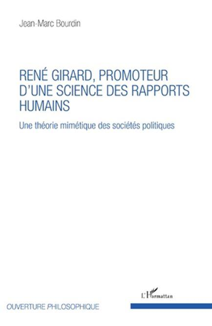
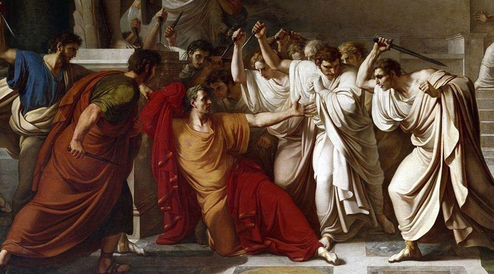

Jean-Marc Bourdin est docteur en philosophie de l’université Paris 8. Il a déjà publié Duchamp révélé et L’Art contemporain à l’épreuve de la théorie mimétique. Nous avions, en début d’année 2019, chroniqué le Tome I de son étude intitulée « René Girard philosophe politique malgré lui ». Avec ce Tome II, sous-titré « Une théorie mimétique des sociétés politiques », Bourdin poursuit ses travaux en approfondissant la question du mimétisme dans les sociétés humaines.
En préalable, n’oublions pas que « l’homme est animal politique » comme le disait Aristote.
Dès les premières lignes, l’auteur définit son sujet d’étude en précisant les points saillants de son postulat : « Historien de formation, Girard déploie son travail dans le temps de l’évolution humaine. Or notre réflexion débutée dans le premier tome porte sur les conditions de possibilité d’une anthropologie politique fondée sur la théorie mimétique ; et il n’y a pas à notre sens d’anthropologie politique sans confrontation aux faits ou hypothèses de la paléontologie, de l’archéologie, de l’histoire et de la sociologie. » Bourdin part de ce principe, car il estime que « toutes ces disciplines proposent des éclairages sur les questions de la violence, des origines de la culture, des croyances religieuses ou encore de l’inégalité entre les hommes. »
La question des rapports entre les humains jalonne l’Histoire mais également toutes les disciplines regroupées dans les Sciences sociales. De manière concrète, l’auteur estime « qu’en pratique, Girard se pose la question du conatus de l’espèce humaine : celle-ci a en effet persévéré jusqu’à présent dans son être et en a même étendu la puissance comme aucune espèce animale avant elle, quoique privée des régulations neurophysiologiques qui préservent les autres espèces de l’autodestruction. » Ces envolées intellectuelles nous rappellent les intuitions développées par Girard, dans son œuvre magistrale, Achever Clausewitz, publiée en 2007, qui lui ont valu le titre de « penseur de l’apocalypse. »
A l’heure du mondialisme, du monde sans frontières et des autoroutes de la communication, Bourdin rappelle des points théoriques de la pensée girardienne : « La pérennité de l’humanité aurait ainsi été d’emblée sous la menace de crises provoquées par des pertes de différence au sein des communautés. La culture est pour lui cet ensemble de différences qui maintient la paix au sein d’un groupe où le conflit pour l’appropriation des biens jugés les plus précieux est toujours prêt à reprendre. »
Afin de prolonger cette pénétrante réflexion, Bourdin n’hésite pas à citer Girard qui dans son ouvrage La Route antique des hommes pervers, relevait dès 1985 : « La lecture que je propose n’est pas psychologique, mais pas non plus sociologique. Elle n’est pas non plus religieuse au sens de la tradition humaniste. La découverte du mécanisme émissaire brouille les frontières traditionnelles entre les disciplines. »
Cependant, loin de tomber dans l’analyse génétique ou héréditaire, l’auteur rappelle des éléments essentiels : « Girard ne voit pas un singe tueur dans l’homme mais repère un mécanisme, la mimésis d’appropriation, qui provoque des rivalités entre les humains, sans l’imputer à une quelconque prédisposition génétique, sauf à considérer que la perte des cadres de dominance se soit traduite dans les gènes, faisant alors des humains les victimes de la disparition de ces instincts régulateurs.
L’homme est-il, comme Rousseau le déclare, un homme bon corrompu par la société ? L’auteur répond de manière catégorique à la formulation rousseauiste en se référant à Girard : « L’homo mimeticus n’est ni intrinsèquement bon ni nativement violent, il est soumis au désir et à ses conséquences. Si Girard est un penseur de la violence, c’est en vue de s’intéresser à sa contention. » Il faut constamment avoir l’esprit que « les mêmes causes, produisant les mêmes effets, des crises violentes se répètent, constituant une menace permanente pour tout ordre social. Mal contenue, la violence risque sans cesse de se diffuser par contagion dans l’espace, de proche en proche, et de se reproduire dans le temps par une vendetta se réamorçant à l’infini, tout sang versé réclamant à son tour vengeance. »
En conséquence de cette analyse, il convient de connaître les mécanismes de la violence pour la contrôler, l’éviter et dans le meilleur des cas l’annihiler avant qu’elle ne prenne consistance, n’enfle et sème la destruction. De fait, il ne nous semble guère étonnant de lire le propos suivant : « Dans une période qui s’étend sur près de trois millénaires, à partir de la naissance mésopotamienne, Girard s’intéresse à l’ensemble des mythologies correspondantes et, de manière préférentielle, aux cités grecques, entre affaiblissement du religieux et émergence d’un premier politique, mais également à l’histoire de Rome, de sa fondation mythique par Romulus à l’assassinat de César tel que représenté par Shakespeare, signes de la récurrence toujours possible, dans ces civilisations élaborées, du meurtre fondateur. »
Quelle structure, en Europe, a lutté contre cette violence ? Bourdin écrit : « Quand la barbarie méprise les trois interdits fondamentaux, mentir (parjure), tuer (vengeance) et dévorer (cannibalisme, inceste), l’Église tente, elle, de favoriser : la dévolution successorale au fils encadrée par un sacre ; le mariage monogame, indissoluble, non-consanguin et fondé sur le libre consentement ; l’apprivoisement de la mort. » L’auteur prend soin de rappeler que « l’Église n’influe longtemps qu’à la marge sur ces contemporains même si elle sème progressivement les ferments d’une mutation culturelle » qui sera adoptée, dans les grandes lignes, par l’ensemble du continent européen.
Progressivement, les hommes s’associent, s’organisent et étendent leur domination sur un territoire qui peut longtemps faire l’objet de contestations perpétuelles… Même si les États ont remplacé les sociétés primitives et les différentes organisations sociales mineures, Bourdin note à raison « que la relation politique fondamentale est bien le duel ». Il précise que ce dernier « polarise les oppositions qui se superposent pour n’en faire plus qu’une entre deux champions, deux peuples. Elle évite, ce faisant, le mécanisme de la victime émissaire qui, lui, focalise les oppositions sur un seul. »
Poursuivant son analyse, Bourdin estime que « le tournoi substitue le un contre un (létal seulement par accident) au tous contre un incontrôlable. À l’époque contemporaine, la compétition électorale peut s’envisager comme un nouveau progrès, celui d’une joute collective, la forme du duel se combinant à celle de la sélection / élection d’un seul pour prendre en charge les revendications de la foule. » Néanmoins, lors d’un tournoi deux champions peuvent s’affronter sur le pré, le duel étant alors réglementé par les règles de l’art.
Quoiqu’il en soit, nous ne considérons pas l’élection du chef de l’État au suffrage universel comme un progrès, car il s’agit d’un nivellement par le bas, ou plus exactement d’une décadence. L’élection justifie l’indifférenciation et élimine les différences objectives entre les individus auxquelles Girard tenait tant, car le vote d’un adolescent âgé de 18 ans représente le même poids que celui d’un chef de famille ayant cinq enfants et trente années de carrière professionnelle derrière lui…
Ceci étant énoncé, nous validons l’analyse expliquant que le débat politique a remplacé le duel d’antan. Avons-nous gagné au change ? Nous ne le pensons pas, mais cela relève d’un autre sujet… En définitive, comme l’expose très bien Bourdin dans sa thèse, lire et étudier Girard « offre ainsi l’opportunité de renouveler la perspective sur le politique. En partant de la rivalité, Girard entend remettre la pyramide anthropologique sur sa base à la fois originelle et permanente. » L’auteur continue sur sa lancée : « Le désir mimétique devient alors l’aspiration à une égale puissance, promesse de la citoyenneté, modèle de la souveraineté, fatalement compétitive et toujours susceptible d’être insatisfaite. »
À nos yeux, la démocratie semble parfaitement correspondre à l’idée développée dans la phrase précédente qui explique en réalité son échec. Effectivement, l’utopie égalitaire en politique conduit inévitablement à la déception et aux refoulements. Simplement, certains ne peuvent garder pour eux leurs grandes frustrations et explosent en amorçant un nouveau maillon dans la longue chaîne des cycles de violence. Nous pouvons même considérer que la catharsis développée dans nos sociétés démocratiques et libérales est, pour le moment, tempérée ou contenue par différentes fausses victimes expiatoires selon la fameuse théorie de Girard, dont l’une est incarnée par le perdant du deuxième tour de l’élection présidentielle…
Concrètement, et à défaut de prouver le contraire, Bourdin dit bien « qu’on ne trouve pas de théorie politique chez Girard car le politique n’est dans l’histoire qu’une solution institutionnelle à la violence parmi d’autres et, à chaque instant, en combinaison avec d’autres ». Subséquemment, pour Girard la solution est peut-être religieuse, ou disons-le autrement : biblique. En révélant le mécanisme du meurtre fondateur, la Bible ébranle les bases mêmes du « mensonge mythique ». Nous lisons avec intérêt sous la plume de Bourdin cette idée directrice : « Girard est en effet persuadé que la Bible et, plus particulièrement, les Évangiles, contiennent une véritable anthropologie, et que celle-ci reste à ce jour parfaitement valide. » Cette thèse l’a sûrement « discrédité dans l’université française, et sans doute, en bien d’autres lieux ».
Nous citons à nouveau pour conclure Jean-Marc Bourdin : « La théorie mimétique invite en définitive à penser la poursuite de l’aventure humaine à partir d’une constante - le cercle de la rivalité et de l’égalité - et ses deux limitations - l’insuffisance d’être dans un monde fini. » Pour comprendre la thèse du livre, il faut admettre que l’égalité, loin d’apaiser les conflits, les suscite…
Partager cette page